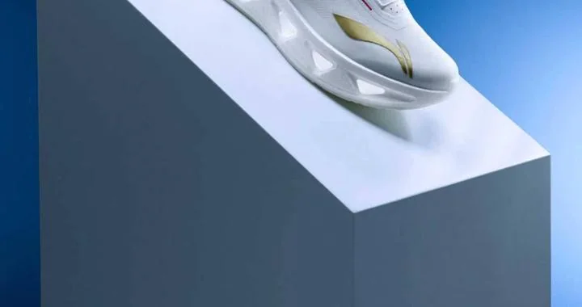

AI 财报季：谁在赚钱，谁在焦虑？
AMD 数据中心业务暴涨，SpaceX 靠 Starlink 成为 AI 公司，OpenAI 营销翻车，Spotify 探索 AI 音乐，还有我们对 LLM 的依赖。今天，我们从这些事件中，看清 AI 产业的真实走向。
把每天真正值得理解的事情，写成可以慢慢读的文章，也做成可以随时听的播客。
AMD 数据中心业务暴涨，SpaceX 靠 Starlink 成为 AI 公司，OpenAI 营销翻车，Spotify 探索 AI 音乐，还有我们对 LLM 的依赖。今天，我们从这些事件中，看清 AI 产业的真实走向。
从中国科学院院士受聘地方高校，到深圳学生玩转AI，再到美国俄克拉荷马州宗教特许学校争议和加州四岁儿童英语测试改革——今天的教育新闻，其实都在回答同一个问题：教育公平和高质量，能不能同时实现？

今天聊聊亚运领奖装备发布、中超三分之一球队换帅、以及The Hundred板球联赛Welsh Fire的精彩逆转。还有听众提问：领奖服设计有啥门道？换帅真能救球队吗？板球规则怎么快速看懂？